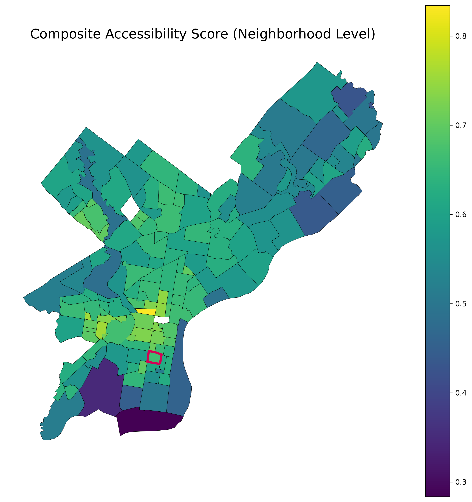
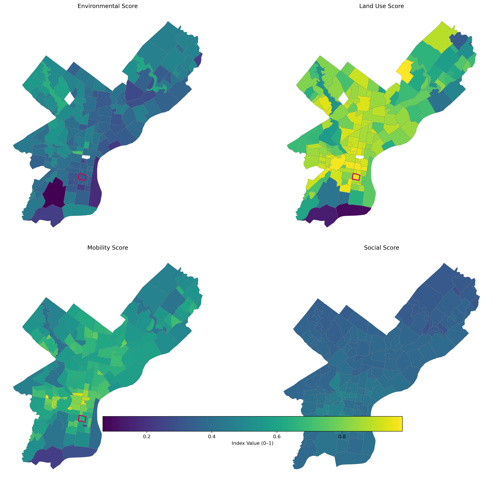

Accessibility Score¶
The Accessibility Score is the final composite indicator synthesizing four domains of neighborhood accessibility: Environmental, Land Use, Mobility, and Social. Each domain captures a different dimension of lived accessibility, and together they form a multidimensional representation of how supportive and navigable each Philadelphia neighborhood is for residents.
All four domain scores are normalized to a 0–1 scale and averaged equally to compute the final index.
Data Sources¶
This composite score integrates outputs from the four analysis domains. The underlying data come from:
- Remote sensing (Landsat 8 SR via GEE) — vegetation and environmental quality
- OpenStreetMap (OSM) — amenities, parks, green space
- Philadelphia Parks & Recreation — additional green infrastructure
- DVRPC Pedestrian & Bicycle Network — sidewalks and bike infrastructure
- Philadelphia Streets Department Curb Data — cartways vs. non-cartways
- ACS 2022 5-year Estimates — disability, age, and commuting
- OpenDataPhilly — neighborhood boundaries
- Census Tracts — spatial aggregation unit
Each dataset is processed in domain-specific notebooks and aggregated to neighborhood-level values.
Components of the Accessibility Score¶
1. Environmental Score¶
Captures ecological and green-space quality through:
- NDVI (vegetation health)
- Park proximity
- Tree canopy coverage
Detailed formulas appear in environmental_score.md.
2. Land Use & Amenity Score¶
Captures access to daily needs through:
- Healthcare proximity
- Service & retail accessibility
See land_use_score.md for methods.
3. Mobility Score¶
Captures walkability and multimodal mobility through:
- Sidewalk continuity
- Bike lane density
- Inverted cartway exposure
Methods in mobility_score.md.
4. Social Score¶
Captures population characteristics tied to vulnerability:
- Inverted disability rate
- Inverted age 65+ rate
- Walk-to-work rate
Methods in social_score.md.
Normalization & Weighting¶
All domain scores are on a comparable 0–1 scale, where:
- 1 = Most accessible
- 0 = Least accessible
Each domain is a weighted combination reflecting their relatve influence:
Rationale for weights: - Mobility (40%): Directly impacts daily navigation and access to infrastructure. - Land Use (30%): Reflects proximity to essential services and amenities. - Environmental (20%): Supports overall wellbeing and quality of life. - Social (10%): Captures demographic vulnerabilities affecting accessibility.
Maps¶
Composite Accessibility Map (Neighborhood Level)¶

This map visualizes Philadelphia neighborhoods on a single accessibility gradient, highlighting areas of strong multimodal access and daily-living support.
Domain Comparison Map Grid¶

This grid allows viewers to compare the spatial structures of each contributing domain.
Percentile Ranking¶
Neighborhood accessibility percentiles were calculated from the final composite distribution.
Passyunk Square Performance¶
- Passyunk Square ranks above the city median in Environmental
- High in Land Use & Amenity (dense corridor access)
- Above average in Mobility (sidewalk strength, moderate bike access)
- Strong Social Score (low disability rate, high walk-to-work)
- Composite percentile: ≈ top quartile citywide

Radar Chart: Passyunk Square vs. City Average¶

Interpretation¶
The Accessibility Score reveals several key findings:
1. Center City and adjacent neighborhoods form the strongest cluster.¶
High walkability, dense transit, rich service access, and strong canopy coverage elevate their composite scores.
2. Northwest Philadelphia performs well environmentally and socially but has uneven mobility.¶
3. River Wards show high walk-to-work rates but weaker environmental characteristics.¶
4. Far Northeast and Southwest tend to rank lowest, largely due to:¶
- Lower amenity density
- Sparse sidewalk networks
- Limited transit-adjacent land use
- Older populations in some areas
Passyunk Square Discussion¶
Passyunk Square stands out due to:
- Amenity-rich land use (restaurant row + health services)
- Strong mobility performance, especially sidewalks
- Favorable social indicators supporting local mobility
- Moderate environmental quality, but improved by access to private and pocket green spaces
Together, these raise Passyunk Square into one of the most accessible mixed-use neighborhoods outside Center City.
Conclusion¶
The Accessibility Score provides a unified, multidimensional understanding of how neighborhoods support daily life, mobility, and wellbeing. It bridges urban form, environmental quality, infrastructure, and demographic factors into a single interpretable measure—essential for planning, equity analysis, and mapping lived experience across Philadelphia.